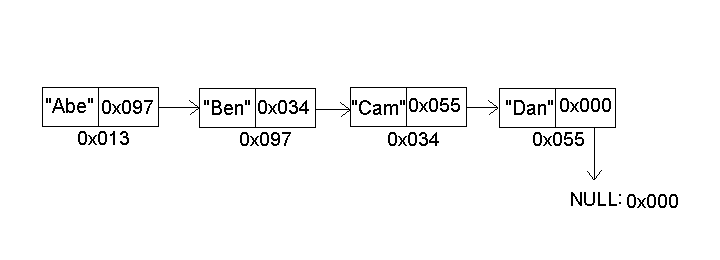
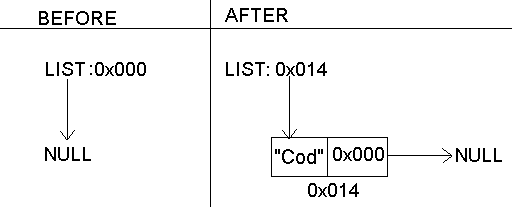
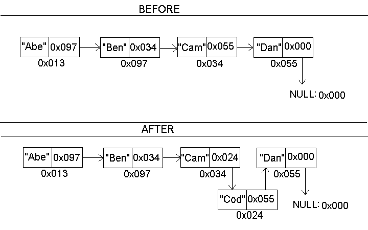

In this chapter we introduce the C library functions for allocating and deallocating memory dynamically. Allocating memory dynamically can come in handy when it is not known how much memory the program will need. For example a database program may need to work both for a customer with 100 records and for one with 10,000 records.
We will also show you some of the common errors associated with dynamic memory allocation, and how Splint can help to avoid them.
In general there are two places memory can come from: the stack and the heap. Up to this point we have been allocating memory from the stack:
int main()
{
int IntegerArray[30];
}
This allocates enough space to hold 30 integers. The
int type is usually 4 bytes long, so
this would allocate 120 bytes of storage. Sometimes
allocating from the stack is all we need.
The bad thing about allocating things on the stack is that it may not be known at compile time how much space is needed.
By allocating memory from the heap we can:
malloc and free
The malloc() function dynamically allocates space
from the heap:
void *malloc(size_t number_of_bytes);
The void * is C's generic pointer type. You can cast the
return value of malloc to any actual pointer type you
like (even your own types that you define with struct)
So code like:
int *ip; ip = (int*) malloc(size * sizeof(*ip));will allocate enough space to hold
size number of
integers. sizeof is an operator which returns the number
of bytes needed to hold one instance of a particular type. In this case,
for most computers sizeof(*ip) will return 4 since on
most computers the integer type takes up 4 bytes.
Using sizeof is preferable to hard coding like this:
ip = (int*) malloc(size * 4);since using
sizeof makes the code more portable.
If there is no memory left on the computer then malloc
will return a NULL pointer. The NULL pointer
is guaranteed not to point at any object.
In general, whenever
a call to malloc is made the program should check
whether malloc returned NULL.
Probably the best way to do this would be to write a
function which takes one pointer argument, and if that pointer
is NULL prints out a suitable debugging message, and
exits the program. Alternatively, you could try and continue the
program without that block of memory.
Clearly you cannot just keep asking for memory, and always getting it. The computer has limited memory resources. If you don't need a piece of memory any more it would be nice to be able to return that piece of memory to the free store. Consider the following program:
If you run this program you will see that eventually
the computer does actually run out of memory, and
that malloc eventually returns NULL.
Splint will warn us about this program. More specifically, it will tell us that there is a a memory leak.
When i is 1 we let p point at a newly allocated block
of memory, but when i is 2 we let p
point at another
newly allocated block of memory. That first block of memory
is not reachable since there are no pointers to it.
Splint's output:
To fix it use free:
void free(void* ptr);
We pass to free a pointer to the block of memory to deallocate.
If a piece of memory is not deallocated by free before the
program ends then usually the operating system in terminating the process
deallocates it.
By using free we can fix our program so that
it doesn't have any memory leaks.
What's the problem with this program now? Scroll down when you know the answer.
Now the program runs in an infinite loop.
Here is splint's output:
Splint cannot detect that malloc
will never return NULL in this program
(there are limits to what static analysis can determine
only by looking at the source code).
On average Splint produces more false positives than false negatives, since a programmer can often determine quickly that Splint is producing a spurious warning, but an unreported warning could lead to a bug in the program.
(Note: This linked list implementation is based on that found in The Joy of C by Lawrence H. Miller, and Alexander E. Quilici.)
An advantage of a linked list over an array is that deleting or inserting elements in the middle of an array can be expensive since all the entries must be shifted. A linked list requires no shifting to insert or delete elements.
But a linked list has the disadvantage that it takes longer to retrieve an entry.
Here is the structure of a linked list:

Each node has two fields. One points to the other node in the list, and the other holds the relevant data (in this case a name).
Let's implement a linked list which holds employee records.
Since employees are always getting hired, and fired a linked list is an appropriate data structure for keeping the list in order by employee last name.
We will want to be able to insert to a list, delete from a list, print out the list, or find a employee record within the list. We start like this:
An emp_record has three data
fields corresponding to attributes of the employee,
and a next field which corresponds to the
next employee record in the list.
We will define an emp_list
to be a pointer to an emp_record.
And we will designate the empty list as
NULL:
emp_list my_list = emp_list_create();
NULL.
First, let's write prototypes for all our functions, since we want to insert, delete, find, and print we will need these four functions:
emp_list insert_record(emp_list lst, emp_record *e);
emp_list delete_record(emp_list lst, char* lastname);
emp_record* find_record(emp_list lst, char* lastname);
void print_list(emp_list lst);
In the case of inserting or deleting we need to return a
new list. Remember that C all parameters are passed by
value so neither of these functions can actually modify
their argument, lst. That's why they need
to return the new changed list:
my_list = delete_record(my_list, "Finkelstein");
Before starting on that we need to implement a simple function which copies one employee record into another:
We need to
do this because we are going to implement
insert_record by making
a copy of the record passed in.
Our approach for insert_record will be to
iterate through the list looking for
the first entry whose last name is alphabetically
after the last name of the inserted record.
There are two cases
one for inserting to the front of the list, and the other
for inserting in the middle or the end:
Here is a picture of what were doing if we insert "Cod" into an empty list:

And here is a picture of what we are doing if we insert "Cod" into a non-empty list:

We have three more functions to implement:
delete_record
find_record
print_list
find_record, and print_list
are both similar in that they involve interating through a list,
and performing some operations on each node.
Try and implement both of
those functions now. You can reuse the code which iterates
through the list from the insert_record function.
For now, just verify that it will compile.
After you have finished writing those try doing delete_record.
As before with insert_record there are two cases: deleting
the first node in the list, and deleting the middle or last node. All
that is changed is that now
instead of setting the next pointer of the previous node
to the inserted record just set it to next->next node,
so that the deleted node no longer has another node in the list
pointing at it. Remember to free the deleted node.
After you have written the functions try them out using this test bench.
To run the test bench you will need the
data file
to be
in the same directory as the program (be
careful about adding unneeded white space in the data
file)
Here is our implementation:
LinkedList.c
Splint can check unannotated programs for common types of memory errors. Specifically a memory leak and a dangling pointer.
In this case the memory block which ip
was pointing at is unaccessible after the assignment
ip = ig;
Since there is no way to access it there is no way
to free it. A small memory leak may be unnoticeable.
But if there is a function which gets executed over, and over
again, and for each execution there is a small memory leak, then
eventually the computer will run out of memory.
when we run Splint on this program we get:
Another type of error is called the "dangling pointer". The
problem occurs when a pointer is pointing at a piece of memory
that has already been freed. In this case, trying
to dereference that pointer will cause the program to crash.
Here is a simple example:
and what Splint has to say about it:
Let's use Splint to find errors in the linked list program. We'll start with what we had from the previous section:
Splint reports 32 warnings. Let's look at the first warning:
a->next is pointing at a piece of memory in
which case the line a->next = b->next would
be a memory leak.
However, a pre-condition of this function is that emp_record *a
is undefined (because we are overwriting its fields). We can tell
Splint that we are going to make this assumption, and leave it up
to the caller to prevent a possible memory leak. We can do this by adding
an /*@out@*/ annotation in copy_record telling
Splint that emp_record *a may be undefined:
Now splint reports 30 warnings (with this extra information an additional warning was also eliminated).
Now let's look as this warning:
Splint considers the possibility that malloc may have
returned NULL in line 61 in which case a NULL
pointer is getting passed to copy_record. We can fix
the code by adding an assert statement.
assert (new_record != NULL);
With the assert statement the program will abort if malloc
returns NULL.
There are two other places in the file which have unchecked calls to
malloc, lines 136, and 182. We fix these and get:
Now splint raises 27 warnings. Let's consider this warning:
fp is NULL because the call to fopen
could have returned NULL if the file wasn't in the directory.
We can fix this just like we fixed the malloc warnings, by
adding an assert statement.
Now Splint raises 26 warnings. Let's consider the warning:
Since we are not going to use the return value of this function we'll
just cast the result to void and this will eliminate the
warning:
This gives you an idea of what kinds of warnings Splint
produces, and how the correct response may be to
change the code, or add an annotation.
Some of the
warnings produced by Splint may be
spurious in which case
it is appropriate to use the /*@i@*/
annotation to suppress the checking of that line.
You can also suppress checking of a type of warning by unsetting the flag when running Splint. For more information check Appendix B of the users guide.